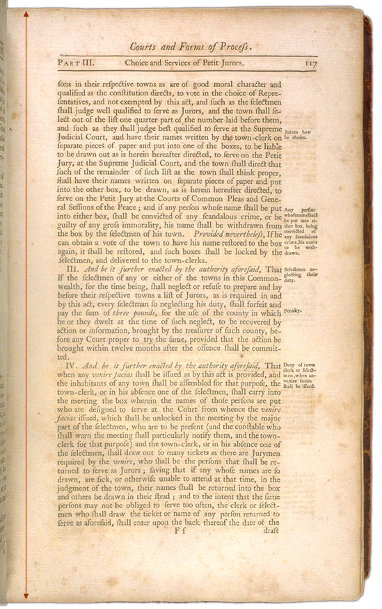

The Official Story
Chapter 15
The verdict of the Supreme Judicial Court
The Supreme Judicial Court justices heard the case of Joseph North vs. the Commonwealth of Massachusetts on July 10, 1790. The all-male jury's verdict two days later was "not guilty." (The cases against the other two men were continued to the next session and then dropped.)(Why was there an all-male jury? According to 18th century American law, only male property owners could vote, and only those who voted could serve on juries.)
The official record tells us nothing about what was said in court.
Most probably it came down to a case of his word versus her word. Since Judge North was a prominent member of the community and Rebecca Foster was the wife of a discredited minister, one could argue that the verdict was predictable, no matter what evidence was presented.
| What was Martha's reaction to the verdict? |

| previous |
The Supreme Judicial Court hears the case in Pownalboro | |
| next |
How did this case get recorded in the official town history? |
| The Perpetual Laws of the Commonwealth of Massachusetts Massachusetts General Court May 1789 |
View Text View Frames version |
| Page 116 | Page 117 | Page 118 | Page 119 | |
 |
 |
 |
 |
|
|
Page 117 |
|
|
 |
||
|
|
|
|